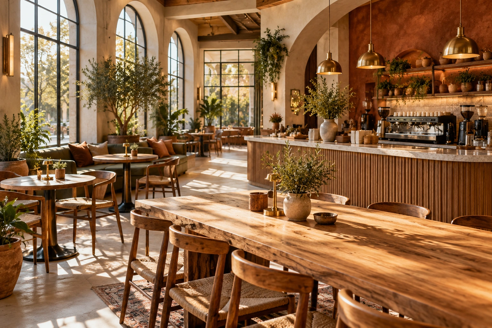

Культура · MOKO NOTES
Маленькие кофейные ритуалы, большие чувства
Как превратить обычную чашку кофе в приятную паузу среди дел.
Читать историю ↗Яркие вкусы, уютные моменты и немного магии в каждой чашке. MOKO — место, которое хочется чувствовать.

Наши любимчики. Тапни на карточку — откроется целая история вкуса. Просто исследуй, заказывать ничего не нужно.
Влюбляемся в детали: в мягкий свет, в любимую песню, в первый глоток и в разговоры, которые не хочется заканчивать.
Узнать нашу историю ↗
✳ SMALL MOMENTS
Strawberry Matcha — нежная матча, яркая клубника и настроение, как будто сегодня пятница.
Как превратить обычную чашку кофе в приятную паузу среди дел.
Читать историю ↗
О палитре, настроении и о том, как визуальный язык создаёт атмосферу.
Читать историю ↗
Плейлист, свет из окна и кофе — маленькие детали, которые всё меняют.
Читать историю ↗Никаких заказов и суеты — просто красивый мир, в который хочется заглянуть.
Найди свой напиток ↗